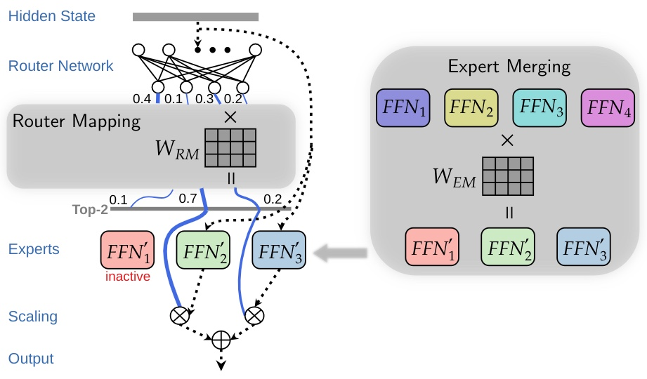

Efficient Expert Pruning for Sparse Mixture-of-Experts Language Models: Enhancing Performance and Reducing Inference Costs
arXiv 2024* = Co-first authorsarXiv

In brief
EEP compresses sparse Mixture-of-Experts LLMs with a two-phase, gradient-free evolutionary search: first prune to the best subset of experts, then "fine-tune" by merging the pruned experts' knowledge into the survivors — all with inference-only compute. On Mixtral 8x7B-Instruct, keeping 4 of 8 experts raises the ten-task average from 62.4 to 74.2 while cutting GPU memory 47%; even with 2 experts (72% fewer parameters) the model beats the full one on several tasks.
Key takeaways
- Two-phase search over router-mapping and expert-merging matrices: pruning keeps them one-hot, merging relaxes them to continuous coefficients — merging acts as gradient-free fine-tuning that runs on inference-capable hardware.
- Fewer experts, better results: pruning half of Mixtral 8x7B-Instruct's experts lifts SQuAD from 53.4% to 75.4% with no parameter updates, and with merging the ten-task average rises from 62.4 (full model) to 74.2 (4 experts) and 65.6 (2 experts, 72% fewer parameters).
- Cutting active experts from 2 to 1 preserves or improves accuracy after merging, accelerating prefill by up to 1.63x; combining both use cases (4 total / 1 active) saves 47% GPU memory with a 1.41x speedup.
- A hypothesis for why pruning helps: the small router network partitions its input space more effectively over fewer experts — expert activation patterns change substantially after pruning.
- Generalizes to MMLU (including held-out datasets) and across models (Mixtral 8x22B, Qwen1.5-MoE, Qwen2-MoE); used purely as fine-tuning without pruning, expert merging lifts Mixtral's average from 56.5 to 73.2.
Abstract
The rapid advancement of large language models (LLMs) has led to architectures with billions to trillions of parameters, posing significant deployment challenges due to their substantial demands on memory, processing power, and energy consumption. Sparse Mixture-of-Experts (SMoE) architectures have emerged as a solution, activating only a subset of parameters per token, thereby achieving faster inference while maintaining performance. However, SMoE models still face limitations in broader deployment due to their large parameter counts and significant GPU memory requirements. In this work, we introduce a gradient-free evolutionary strategy named EEP (Efficient Expert Pruning) to enhance the pruning of experts in SMoE models. EEP relies solely on model inference (i.e., no gradient computation) and achieves greater sparsity while maintaining or even improving performance on downstream tasks. EEP can be used to reduce both the total number of experts (thus saving GPU memory) and the number of active experts (thus accelerating inference). For example, we demonstrate that pruning up to 75% of experts in Mixtral 8x7B-Instruct results in a substantial reduction in parameters with minimal performance loss. Remarkably, we observe improved performance on certain tasks, such as a significant increase in accuracy on the SQuAD dataset (from 53.4% to 75.4%), when pruning half of the experts. With these results, EEP not only lowers the barrier to deploying SMoE models, but also challenges the conventional understanding of model pruning by showing that fewer experts can lead to better task-specific performance without any fine-tuning.
BibTeX
@misc{zhu_eep,
title = {Efficient Expert Pruning for Sparse Mixture-of-Experts Language Models: Enhancing Performance and Reducing Inference Costs},
author = {Liu, Enshu and Zhu, Junyi and Lin, Zinan and Ning, Xuefei and Blaschko, Matthew B. and Yan, Shengen and Dai, Guohao and Yang, Huazhong and Wang, Yu},
year = {2024},
eprint = {2407.00945},
archivePrefix = {arXiv},
}